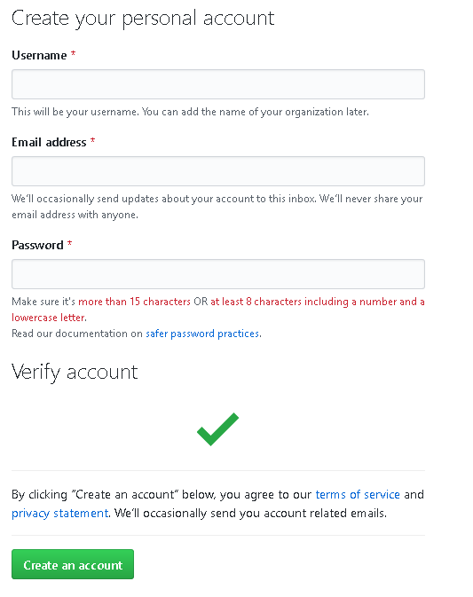

Github
Git 프로젝트를 지원하는 웹호스팅 서버이다.
회원가입
https://github.com/
위의 링크로 접속하여 상단의 SingUp을 누른다.

계정 정보를 입력해주고 Create an Account를 눌러준다.
Repository 생성

로그인을 한 뒤 상단 메뉴에서 New Repository를 누른다.

Repository Name에 생성하려는 Repository의 이름을 적는다.
Description은 생성하는 Repository의 설명을 적는 곳인데 굳이 적지 않아도 된다.
public으로 생성할 경우 Github에서 다른 사용자들이 이 Repository를 볼 수 있다.
private로 생성할 경우 Repository의 주인과 권한이 있는 사람들만 이 Repository를 볼 수 있다.
Initialize this repository with a README 옵션은 이 Repository의 첫 페이지에 보이는 README 파일을 자동으로 생성하는 옵션이다.
이 문서는 Markdown문법으로 작성되어야 한다.
예)Add .gitignore는 뒤에서 설명하겠다.Add a license는 Repository에 있는 소스가 따를 라이센스 정책을 선택하는 것이다.
라이센스를 선택할 경우 라이센스에 따른 LICENSE 파일을 생성해준다.
필요한 옵션들을 선택하고 Create Repository를 누르면 Repository가 만들어진다.MIT License를 선택하여 LICENSE파일이 생성되었고 Initialize this repository with a README를 체크하여 README.md 파일 또한 생성되었다.